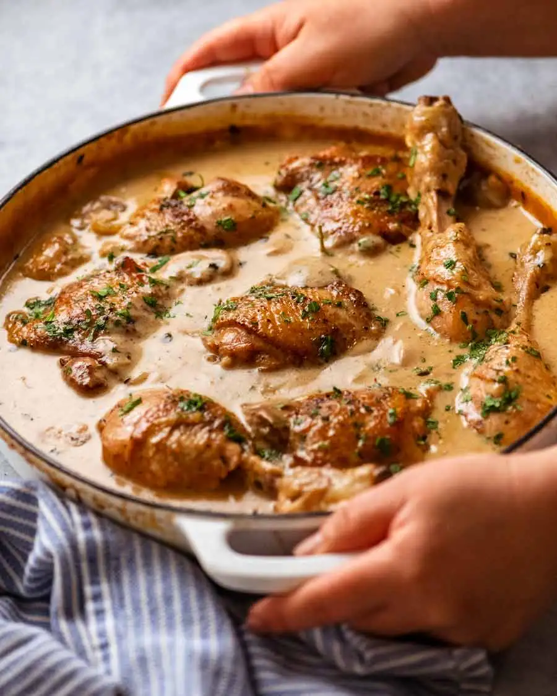

Chicken Fricasse

Most of my cozy recipes are easy to make and this one is no exception. Usually, I have a bad habit of messing up bone-in dark meat but for some reason I could not mess this one up.
It's delicious even if you exclude the heavy cream step at the end. Personally, I usually exclude it or just use alfredo sauce in mine- it tastes great everytime!
Ingredients
The Chicken
- 4 chicken drumsticks
- 4 chicken thighs, skin-on and bone-in
- 1 tsp salt
- 1/2 tsp black pepper
- 4 tbsp / 60g unsalted butter
The Stew
- 300g / 10oz white mushrooms, halved if small, or cut in 4 to 6 if large
- 2 medium brown onions, sliced 0.6cm (1/2in) wide
- 2 garlic cloves, finely minced
- 1 bay leaf
- 3 thyme sprigs (or 1/2 tsp dried thyme)
- 3 tbsp flour
- 1/2 cup white wine
- 3 cups chicken stock
- 1/4 tsp salt
- 1/4 tsp black pepper
- 2 tbsp parsley, chopped
- 2/3 cup thickened/heavy cream
Instructions
- Season chicken: Pat chicken dry with paper towels then sprinkle with salt and pepper.
- Brown thighs: Melt butter over medium-high heat in a large skillet or heavy based pot with a lid.
Add chicken thighs, skin side down, and cook for 4 to 5 minutes until golden brown. Turn and cook the other side for 1 minute then remove to a plate.
- Brown drumsticks: Then brown the drumsticks, as best you can. I do 3 sides, about 2 minutes each. Then remove from skillet.
- Sauté mushrooms and onion: Add mushrooms, onion, bay leave and thyme. Cook for 5 minutes until mushroom is lightly golden ‐ they won't go deep golden brown.
- Garlic and flour: Add garlic and stir for 30 seconds. Add flour and cook for 1 minute.
- Wine and chicken stock: Add wine and chicken stock. Stir, scraping the base of the pot to dissolve the brown residue stuck to the pan ("fond") into the sauce.
- Return chicken to sauce: Return chicken back into the sauce with the skin side up.
- Simmer covered 10 minutes: Once it comes to a simmer, adjust heat so it's bubbling constantly but not rapidly (see video) ‐ medium-low on my stove. Cover with lid and simmer 10 minutes.
- Uncover 20 minutes: Remove lid and let it simmer for a further 20 minutes. Chicken will be cooked ‐ internal temperature 75°C/167°F or slightly higher.
- Creamy sauce: Remove chicken to a plate. Add cream and stir. Once it comes up to a simmer, taste sauce (I know, big ask!), and add more salt if desired..
- Serve! Return chicken into the sauce then remove from the stove. Sprinkle with parsley and serve! Traditionally served over mashed potato or rice. Also ideal with short pasta like penne, ziti or macaroni.
Chicken Fricassée (quick French chicken stew) Recipe from What Tin Eats